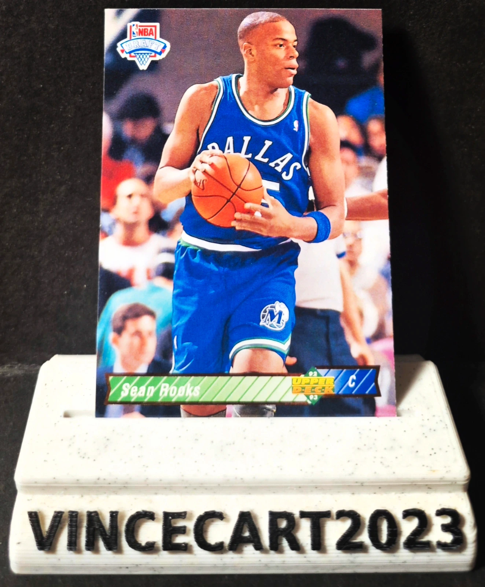

Carte NBA Sean Rooks Rookie Upper Deck 1992-93 NBA Draft #19 Dallas Mavericks Vintage
1,25 €
🏀 Carte NBA originale Sean Rooks issue de la collection Upper Deck 1992-93 NBA Draft, représentant le pivot des Dallas Mavericks.
📋 Détails :
Joueur : Sean Rooks
Équipe : Dallas Mavericks
Collection : Upper Deck 1992-93 NBA Draft
Numéro : #19
Éditeur : Upper Deck
Carte Rookie / Draft
Carte originale, non reprint
⭐ Choisi en 30e position de la Draft NBA 1992, Sean Rooks a évolué plusieurs saisons en NBA avant de devenir entraîneur. Une carte vintage idéale pour les amateurs de rookies des années 90.
✅ État général : très bon (voir les photos pour apprécier l'état exact de la carte).
📦 La carte sera expédiée avec soin sous sleeve
Disponibilité à confirmer sur Vinted.